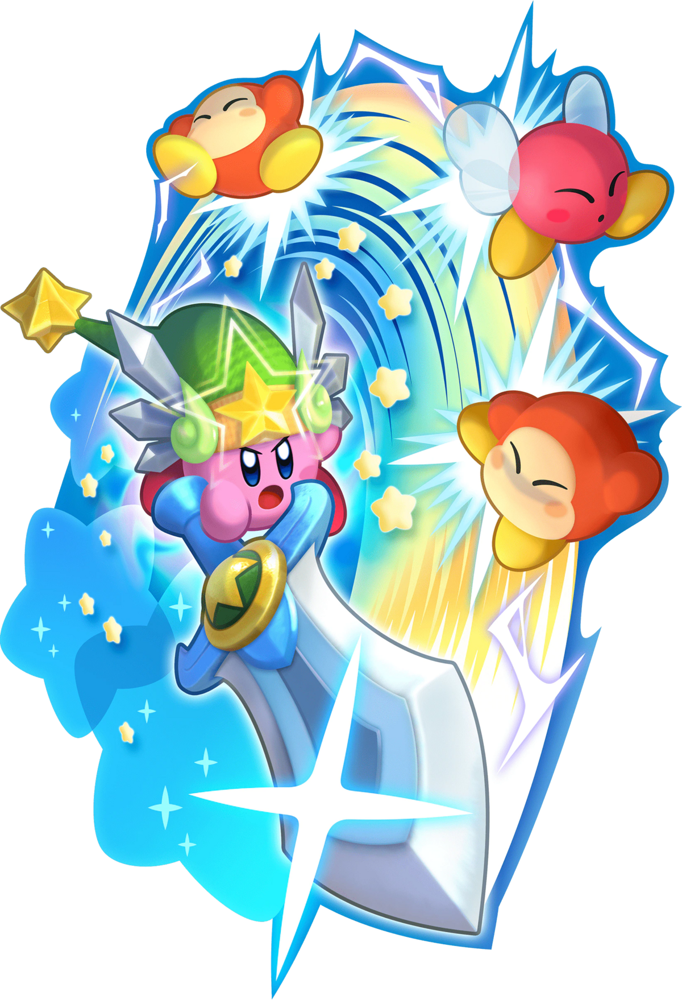

What is Kirby?
- He's classified as male
- He's a round pink warrior
- Kirby is eight inches tall
- In the game Super Smash Bros. Kirby weighs 74 lbs
- Kirby has an ability called "Copy"
- Kirby does not know how to read
- Kirby lives on the planet Popstar
- The Kiby series is 31 years old
- Kirby's rival is meta knight
- His main weapon is the Rainbow Sword
Kirby's abilities

Kirby has the ability called "Copy" this ability allows him to absorb people and thing to gain there powers. he can be use this on a car and he would then become a working car.
The Rainbow Sword
Kirby's Rainbow Sword is made from Rainbow drops that can be found across the several islands and worlds Kirby gets the sword to defeat King Dedede.King Dedede steals the Dream Land's food supply Kirby saves the world by defeating King Dedede and getting the food back to the people.